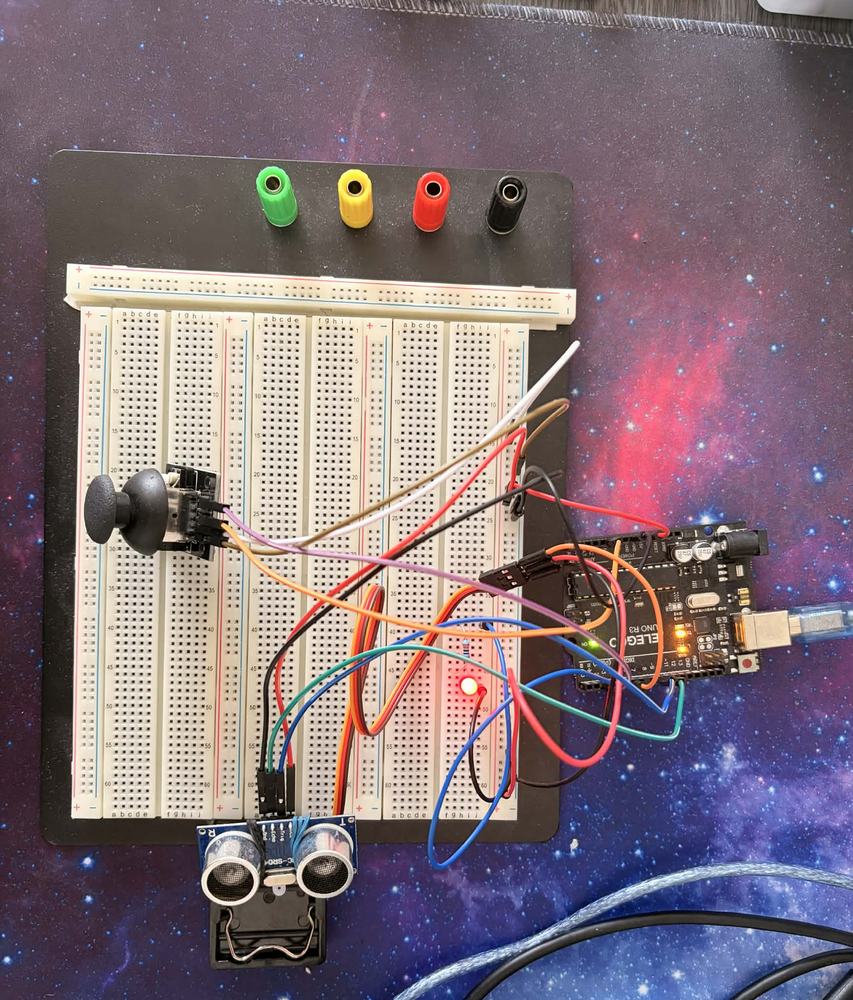
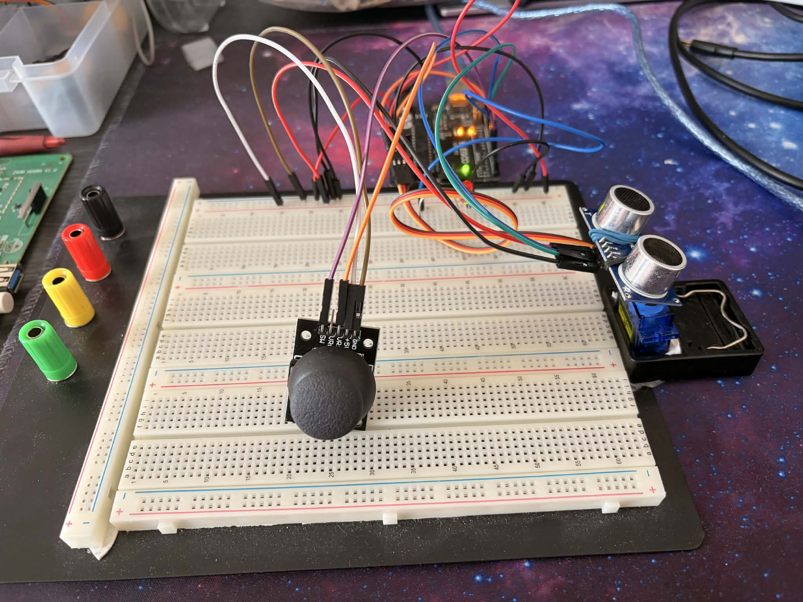

Automatic Scan Mode
The Arduino continuously sweeps the servo from side to side and streams angle and distance data to the Python application for live rendering.
A personal embedded project combining an ultrasonic sensor, servo motor, joystick-based manual control, serial communication, and a custom Python radar interface for real-time visualization and interaction.

What the project does and why it matters
This project simulates a compact radar-like scanning system. An Arduino controls a servo motor that sweeps an ultrasonic sensor across an angle range. Distance measurements are sent to a Python application through serial communication, where a custom Pygame dashboard renders the scan in real time.
The system supports both automatic scanning and manual operation. In manual mode, the servo can be controlled either with a physical joystick or from the desktop interface, which makes the project a strong demonstration of embedded control, UI design, and hardware/software integration.
The most important technical capabilities of the system
The Arduino continuously sweeps the servo from side to side and streams angle and distance data to the Python application for live rendering.
The user can switch to manual mode and aim the sensor using a joystick or directly from the Python interface with on-screen controls.
The desktop application displays current angle, distance, mode, status, and animated target traces in a radar-inspired interface.
Valid distance measurements are transformed into radar points and persisted visually to help interpret the movement and location of detected objects.
The Python application can send commands such as AUTO,
MANUAL, ANGLE:x, and joystick handoff logic.
The project required debugging state handling, mode priority, control conflicts, layout tuning, and clean shutdown behavior between software and hardware.
Hardware, firmware, and desktop layers working together
The physical prototype uses an Arduino board, an HC-SR04 ultrasonic sensor, a servo motor for angular scanning, and a joystick module for local manual input.
Central controller executing the real-time logic and hardware coordination.
Measures object distance and provides the raw data for the radar display.
Rotates the sensor across an angular field to simulate a scanning radar.
Allows manual aiming and mode interaction directly from the hardware setup.
The desktop application is written in Python using Pygame and communicates with the Arduino over a serial link. It interprets angle-distance packets and transforms them into a real-time radar-like visualization.
Handles sensor reads, servo control, joystick logic, and serial command parsing.
Streams measurements to the PC and receives mode/angle control commands.
Displays the tactical radar screen, data cards, mode buttons, and manual slider.
Coordinates manual/auto priority, slider input, joystick handoff, and clean exit behavior.
What was built, improved, and learned
The first version focused on making the ultrasonic sensor and servo work together, producing reliable distance data while sweeping the sensor mechanically.
The project then evolved into a complete interface system by adding a Python-based radar UI, making the measurements visually interpretable and much more portfolio-worthy.
Manual operation was extended with joystick input, on-screen buttons, and a slider, turning the project into a more polished and interactive demonstration.
An important issue appeared when Python manual mode kept control even after the UI closed. Fixing this required improving handoff logic between software and joystick control, which is a strong example of debugging state-based embedded behavior.
The final system demonstrates embedded control, sensor integration, physical interaction, serial communication, real-time graphics, and iterative problem solving — all in one project.

